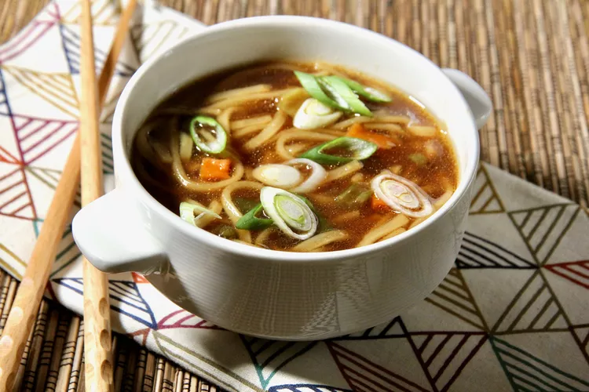

Ramen Noodle Soup
Description
This soup is just very very good....you can find ramen noodles at most supermarkets, or at Asian grocery stores.
Ingredients
- 3 ½ cups vegetable broth
- 1 (3.5 ounce) package ramen noodles with dried vegetables
- 2 teaspoons soy sauce
- ½ teaspoon chili oil
- ½ teaspoon minced fresh ginger root
- 1 teaspoon sesame oil
- 2 green onions, sliced
Steps
- In a medium saucepan combine broth and noodles. Cover and bring to a boil over high heat; stir to break up noodles. Reduce heat to medium and add soy sauce, chili oil and ginger. Simmer, uncovered, for 10 minutes. Stir in sesame oil and garnish with green onions.
- Serve hot and enjoy!